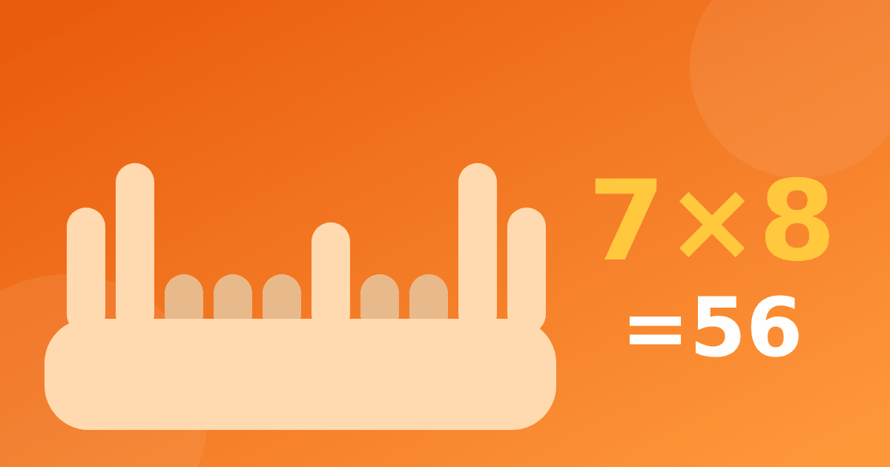

Умножение на пальцах: как считать 9 и числа от 6 до 10

Таблица умножения на пальцах кажется почти волшебством: два набора загнутых пальцев, и ответ готов. Для трудных примеров, особенно для множителей от 6 до 10, этот способ действительно работает. Разберём два приёма точно, по шагам, проверим их на примерах 7 × 8 и 6 × 9 и честно скажем, чего ждать от умножения на пальцах и когда пора переходить к запоминанию.
Таблица умножения на пальцах: способ для числа 9
Положите обе ладони перед собой, пальцы растопырены. Они пронумерованы слева направо от 1 до 10. Чтобы умножить 9 на число от 1 до 10, загните палец с этим номером. Слева от загнутого пальца окажутся десятки, справа единицы.
Пример 9 × 4. Загибаем четвёртый палец. Слева три пальца, справа шесть. Получается 36. Пример 9 × 7: загибаем седьмой, слева шесть, справа три, ответ 63. Более подробно этот способ разобран в статье таблица умножения на 9.
Умножение на пальцах для чисел от 6 до 10
Он выглядит сложнее, но состоит из четырёх простых шагов. Каждое число от 6 до 10 показываем на своей руке так: сколько у числа единиц сверх пяти, столько пальцев загибаем. Для 6 загибаем один палец, для 7 два, для 8 три, для 9 четыре, для 10 пять.
- Загните пальцы на обеих руках: на левой столько, сколько у первого числа единиц сверх пяти, на правой то же для второго.
- Сложите загнутые пальцы обеих рук. Это десятки ответа.
- Посчитайте прямые пальцы на каждой руке и перемножьте эти два числа. Это единицы.
- Сложите десятки и единицы.
Проверим на 7 × 8. У семёрки загнуто 2 пальца, у восьмёрки 3. Загнутых всего 5, значит 5 десятков, то есть 50. Прямых пальцев: на одной руке 3, на другой 2, их произведение 3 × 2 = 6. Итого 50 + 6 = 56. Верно.
Теперь 6 × 9. У шестёрки загнут 1 палец, у девятки 4. Всего загнутых 5, десятки равны 50. Прямых пальцев 4 и 1, произведение 4 × 1 = 4. Итого 50 + 4 = 54. Тоже верно.
Ещё одна проверка на случай, когда произведение прямых пальцев двузначное: 6 × 6. Загнуто 1 + 1 = 2 пальца, это 20. Прямых по 4, 4 × 4 = 16. Складываем 20 + 16 = 36. Ответ правильный, но здесь нужно сложение, а не простое приписывание цифры, и об этом полезно предупредить заранее.
Почему это работает
Объяснять причину необязательно, но старшим детям можно показать. Если число представить как 5 плюс излишек (7 это 5 + 2, а 8 это 5 + 3), то 7 × 8 раскладывается на 5 × 5, 5 × 3, 2 × 5 и 2 × 3. Это 25 + 15 + 10 + 6, всего 56. Пальцы просто группируют те же слагаемые удобным способом. Здесь ребёнок встречается с мыслью, которая лежит и в разложении чисел для умножения в уме.
Как считать на пальцах: плюсы и минусы
Плюсы: метод наглядный, помогает, когда в голове провал по конкретному примеру, и даёт ребёнку уверенность, что ответ можно найти самому. Для сложной части таблицы, умножения на 6, 7 и 8, он хорошая подсказка на время.
Минусы: способ медленный, требует внимания, и ребёнок может привыкнуть к нему вместо запоминания. Для чисел меньше 6 он не нужен, а на контрольной со временем его использовать неудобно. Кроме того, он не объясняет смысл умножения, только даёт механизм.
Когда переходить к запоминанию
Хорошо, если пальцы остаются временной опорой. Как только ребёнок начал чаще отвечать сразу, чем считать, пора убирать подсказку. Заметили, что он до сих пор загибает пальцы на 3 × 4? Значит, нужно вернуться к лёгкой части таблицы и закрепить её. Помогут игры для таблицы умножения и тренажёр «Умножение»: там пример объясняется на клеточках, а до 10 минут занятий в день доступны бесплатно.
Общая логика занятий описана в статье как выучить таблицу умножения: понимание, затем повторение, затем игра.
Частые вопросы
Можно ли считать на пальцах умножение на 2, 3, 4, 5?
Можно, но лучше использовать для этого сложение одинаковых слагаемых и запоминание. Для маленьких чисел пальцевый метод не даёт выигрыша, только лишний шаг.
Мешают ли пальцы выучить таблицу умножения?
Не мешают, если это временная подсказка. Мешать начинают тогда, когда ребёнок годами не пробует отвечать по памяти. Предлагайте иногда сначала назвать ответ, а затем проверить его пальцами.
Как показать способ для 6–10 младшему школьнику?
Начните с 6 × 6 и 7 × 7, сидя рядом и загибая пальцы вместе. Не объясняйте теорию сразу: пусть сначала убедится, что ответ получается правильным, а потом спросит, почему.
Пальцы хороши как мостик через самые неудобные примеры. Построили мостик, перешли, и можно идти дальше уже без него.